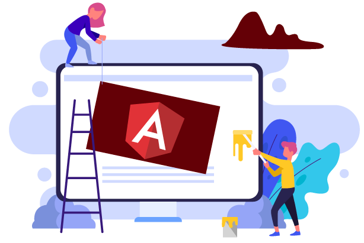

Olá,
Meu nome é Anderson
Desenvolvedor de Software Senior
Migrando para Desenvolvedor Front-end

SOBRE MIM
Eu trabalho como desenvolvedor de software desktop a mais de 7 anos
na
Thomson Reuters.
Estou envolvido com programação desde 2012 por meio de cursos
presenciais e online. Atuo na área de tecnologia da informação, com
análise e/ou desenvolvimento de sistemas desktop desde 2013.
Frequentemente procuro o meu auto-aperfeiçoamento como
desenvolvedor, finalizei meu diploma de graduação e estou estudando
desenvolvimento web e novos idiomas em cursos on-line.